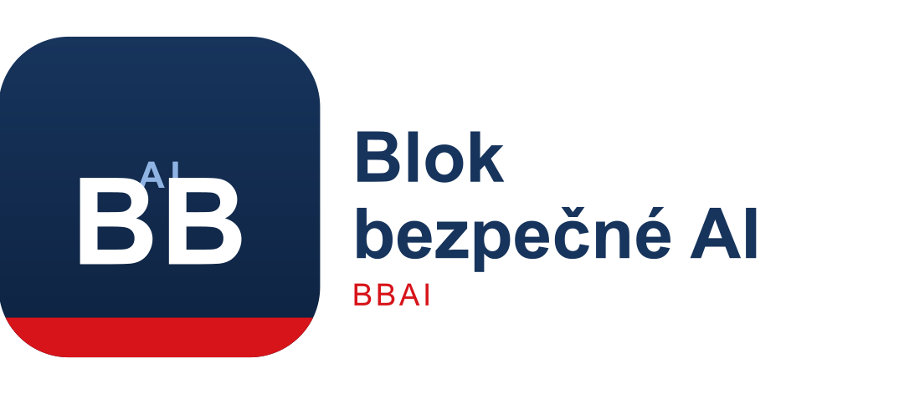

BBAI'">Toto prohlášení vydáváme v okamžiku hluboké proměny. Nástroje, které vytváříme, rychle získávají schopnosti, které dříve definovaly nás samotné. Stroje dnes dokážou konverzovat, uvažovat, plánovat a napodobovat vzorce lidského myšlení.
Rizika, která přináší pokročilá umělá inteligence, se liší od rizik jakékoli předchozí technologie. Nesladěný nebo nekontrolovaný systém se schopnostmi přesahujícími lidské poznání a možnost zásahu by mohl ohrozit živobytí, svobody i samotnou kontinuitu našeho druhu.
V České republice jsme hrdí na parlamentní demokracii, právní stát a tradici veřejného dohledu nad mocnými silami, od průmyslu přes finance až po medicínu a energetiku.
Právě v tomto duchu zakládáme Blok bezpečné AI („BBAI“).
Prostřednictvím svých hlasů, ve volbách i ve veřejné diskusi, prohlašujeme, že umělá inteligence musí zůstat odpovědná společnosti, která ji vytváří, a že žádný špičkový systém by neměl být vyvíjen ani nasazen bez prokázaných bezpečnostních opatření, nezávislého hodnocení a zákonného dohledu.
Tato charta stanovuje náš účel, naše hodnoty a naše závazky. Je naším veřejným prohlášením záměru.
BBAI existuje především proto, aby:
BBAI není registrovanou charitou. Jde o nestrannickou občanskou organizaci.
BBAI není spjatý se žádnou politickou stranou.
Neusilujeme o brzdění inovací, ale o to, aby probíhaly v mezích, které chrání lidský život, důstojnost, autonomii a svobodu.
Rozhodnutí s morálními, občanskými nebo existenciálními důsledky musí zůstat v rukou člověka.
Umělá inteligence musí zůstat nástrojem, nikoli autoritou.
Vývoj špičkové umělé inteligence nesmí předbíhat vývoj bezpečnostních mechanismů nutných k jejímu řízení. Komerční výhoda nesmí mít přednost před veřejnou bezpečností.
Parlament, regulační orgány a veřejné instituce musí mít konečný dohled nad vznikem, testováním, nasazením a provozem pokročilých systémů umělé inteligence.
Občané musí mít přístup k pravdivým a srozumitelným informacím o rizicích, schopnostech a řízení pokročilých systémů umělé inteligence. Vývojáři a tvůrci politik musí jednat otevřeně a své kroky zveřejňovat.
Svět, který po celém světě zdědí budoucí generace, máme ve své péči. Ony samy nemohou hájit svou vlastní bezpečnost. Musíme jednat jejich jménem.
Česká republika nemůže bezpečnost špičkové umělé inteligence zajistit sama. Musíme spolupracovat s dalšími zeměmi, abychom zabránili bezohledným závodům ve zvyšování schopností, podpořili odpovědné globální řízení a prosazovali společné bezpečnostní standardy.
BBAI bude povzbuzovat co nejvíce voličů k podpisu některé z úrovní Slibu bezpečnosti AI. Počet voličů, kteří slib podepíší, a volební kraje, v nichž hlasují, budou veřejně viditelné.
„Jsem registrovaný/á volič/volička v České republice. Uznávám, že špičková umělá inteligence představuje katastrofální rizika. Slibuji, že budu volit pro bezpečnost AI, v souladu s doporučením BBAI.“
„Jsem registrovaný/á volič/volička v České republice. Uznávám, že špičková umělá inteligence představuje katastrofální rizika. Slibuji, že při hlasování vezmu doporučení BBAI vážně v úvahu.“
Slib je dobrovolný a lze jej kdykoli odvolat. Odráží jednoduchou demokratickou zásadu: zvolení zástupci musí nést odpovědnost za bezpečnost veřejnosti.
Každý volič, který podepíše Slib bezpečnosti AI a potvrdí svou e-mailovou adresu, se stává signatářem BBAI. Při registraci si signatáři zvolí, zda chtějí dostávat aktuality od BBAI a/nebo novinky o bezpečnosti AI, a budou sloužit jako první kontaktní bod pro dobrovolníky.
Veškeré osobní údaje shromážděné za tímto účelem budou zpracovávány v souladu s GDPR a českými předpisy na ochranu osobních údajů a budou použity výhradně pro občanské aktivity BBAI.
Hodnocení bezpečnosti AI poskytuje voličům přehledné a nestranické informace o postoji jednotlivých kandidátů a kandidátek k bezpečnosti AI.
Dokud neexistují formální hlasování Poslanecké sněmovny o legislativě týkající se bezpečnosti AI, bude Hodnocení zohledňovat:
Známky se pohybují od A do F. Vyšší známky (A-C) značí rostoucí soulad se zásadami bezpečnosti BBAI, zatímco nižší známky (D-F) znamenají nedostatečné zapojení do účinné správy bezpečnosti AI nebo odpor vůči ní. Známka „Nehodnoceno“ znamená, že BBAI nenalezlo dostatek veřejně dostupných informací k ohodnocení daného kandidáta, kandidátky, poslance či poslankyně. Známka „Bez odpovědi“ znamená, že BBAI nenalezlo dostatek veřejně dostupných informací k ohodnocení daného kandidáta, kandidátky, poslance či poslankyně a tato osoba nereagovala na dotaz BBAI.
Jakmile budou v Poslanecké sněmovně předloženy návrhy a hlasování týkající se správy AI, bude Hodnocení zahrnovat:
Každé hodnocení uvede alespoň jeden důvod a (je-li k dispozici) veřejně dostupný zdroj.
BBAI podporuje přístup upřednostňující bezpečnost, založený na vědeckých poznatcích, demokratickém dohledu a praktické vymahatelnosti. Mezi klíčové zásady patří:
Pokročilé systémy umělé inteligence by měly podléhat formální licenci spojené s přísným sledováním výpočetního výkonu a auditem.
Tam, kde se systémy AI blíží nebezpečným prahům schopností nebo je překračují, musí platit povinné limity výpočetního výkonu, které zabrání vývoji nebo trénování systémů schopných překročit hranici bezpečné ovladatelnosti.
Institut pro bezpečnost AI nebo obdobné zákonem zřízené orgány (například Úřad pro AI při Evropské komisi) musí mít pravomoc hodnotit vysoce rizikové systémy před jejich nasazením i po něm a zveřejňovat smysluplná zjištění.
Organizace, které vytvářejí nebo nasazují vysoce rizikové systémy AI, musí nést jasnou a vymahatelnou právní odpovědnost za škody, které jejich systémy způsobí, čímž se motivace sladí s bezpečností namísto rychlého rozvoje schopností.
Regulační orgány musí mít pravomoc zastavit nebezpečný vývoj nebo nasazení po dobu vyšetřování.
Shrnutí bezpečnostního testování, hodnocení rizik a zásadních zjištění ve veřejném zájmu musí být zveřejňována, pokud to není v rozporu s národní bezpečností.
Česká republika by měla prosazovat mezinárodní smlouvy a rámce spolupráce, které zabrání nekontrolovanému šíření špičkové umělé inteligence.
Signatáři a představitelé BBAI se zavazují k:
Toto zakládající prohlášení vydáváme v přesvědčení, že Česká republika nesmí zůstat pasivním přihlížejícím nástupu umělé inteligence. Musíme usměrňovat její vývoj, omezovat její rizika a zajistit její soulad s hodnotami, které definují náš společný život.
Věříme, že český lid má díky svým hlasům moc požadovat po těch, kdo vládnou, bezpečnost, odpovědnost a prozíravost. Tuto moc je nyní třeba uplatnit.
↑ Zpět nahoru